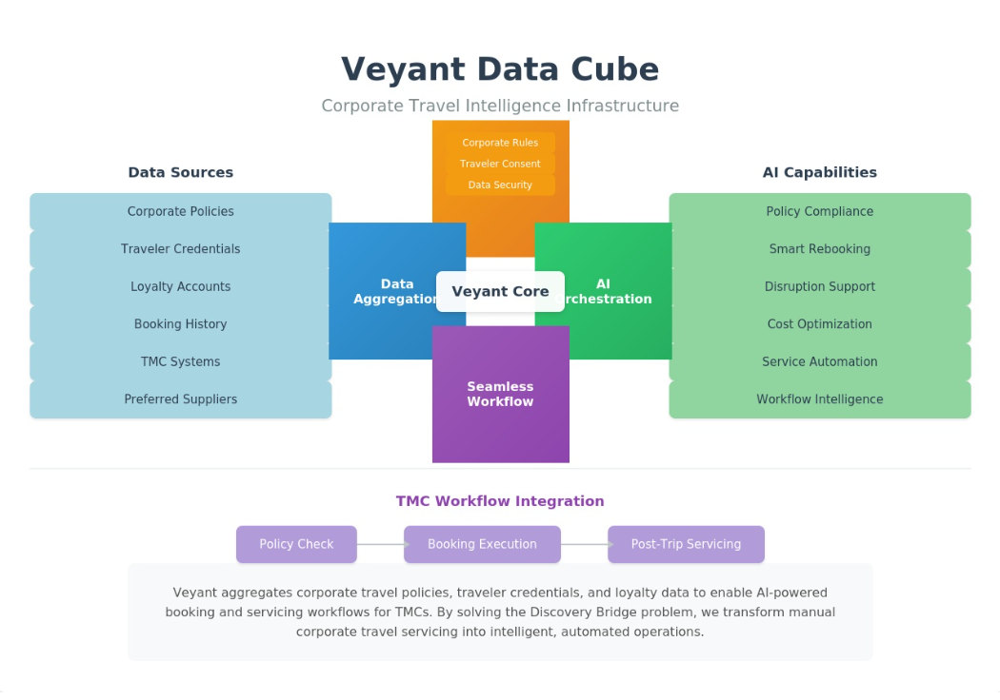

I'm looking for a senior product, strategy, or partnerships role where I can bring two decades of travel and enterprise SaaS experience to a team that's already in motion. I thrive in collaborative, in-person or hybrid environments and I'm based in Salt Lake City. This site is my portfolio: a published industry thesis, working proof-of-concept code, and the product thinking behind it all.
What I Do
Product Leadership in Travel & AI
On a flight from Singapore to LAX in 2023, I watched a plane full of exhausted travelers fumble with apps trying to book ground transportation after midnight. Each one solving the same problem alone. I sketched a concept on a napkin: what if one trusted data layer knew your preferences, your loyalty status, your calendar, and could act on your behalf?
That question led to five months of independent work, a published thesis that attracted VC inbound, and a working proof-of-concept. It also clarified what I'm looking for next.
I'm a senior product leader with twenty years inside the systems that run the travel industry. I've shipped enterprise SaaS at scale, managed global airline relationships through live operational crises, and built product concepts detailed enough to get in front of investors. I do my best work on teams that are highly collaborative, willing to take real risks, and aiming at goals audacious enough to shift how an industry operates. If that's the kind of team you're building, I'd like to talk.
Where the Expertise Comes From
Navitaire (an Amadeus company)
11 years · Salt Lake City
Navitaire runs the reservation, revenue management, and distribution systems for low-cost and hybrid carriers worldwide. During my tenure the platform scaled to support 60+ airlines across six continents, processing millions of bookings daily.
The work I'm most proud of: we shipped the ancillary sales capabilities that made Navitaire's carriers the industry leaders in non-ticket revenue — before seat fees and bag fees became standard practice across the industry. Airlines on our platform were selling ancillaries at scale while legacy carriers were still debating whether to charge for bags. That wasn't luck. It was a product decision about what to build, when, and for whom — made early, when the outcome wasn't obvious.
That's the kind of problem I want to be working on: early, ambiguous, high-stakes, and consequential enough that the rest of the industry eventually follows.
What Navitaire taught me that I carry into every role: enterprise customers don't tolerate ambiguity, engineers lose trust in PMs who can't hold their own technically, and the distance between a good idea and a working system is mostly prioritization and follow-through.
Where It Started
The Evolution of Travel Technology
From GDS to My Travel Data Cube · Published on Iterative Livings, 2025
The article traces every wave of travel technology — from GDS to NDC to AI — and makes the case that the next wave is not a better search interface. It is AI that acts on your behalf. It generated inbound from industry colleagues and a European VC investor, and the question it raised became Veyant.
Independent research & proof-of-concept, Oct 2025–Feb 2026
I spent five months doing what I'd do in the first months of any staff PM role on a hard problem: research, architecture, prioritization, and working artifacts — without a team, budget, or existing codebase.
The problem: Travel Management Companies handle 83% of their tickets manually today at $20 or more per ticket. Not because the work is complex. Because the systems that hold a traveler's loyalty credentials, corporate policy, and supplier inventory don't talk to each other. AI can already reason about travel options. The gap is context — the agent is smart but blind. Veyant was the infrastructure layer designed to give it sight.
The architecture: three federated data domains — a Personal Cube (loyalty status, preferences, trip history), a Corporate Cube (policy rules, negotiated rates, approval thresholds), and a Supplier Cube (airline and hotel connectivity) — queryable by an AI agent before it acts. The traveler owns their data independent of booking channel. Whether a trip was booked through a TMC, a supplier direct, or a third-party app, the AI has full context. The positioning is B2B infrastructure for TMCs — not another booking tool competing with Navan or Concur. Think Plaid, but for AI agents operating across the fragmented systems corporate travel runs on.

Some of this infrastructure could benefit the whole industry. An open-source supplier connector layer, for example — so every company stops rebuilding the same NDC, hotel API, and GDS pipes and competes on intelligence instead. The right home for that might be an existing organization like OpenTravel Alliance or Linux Foundation. The point isn't who builds it. The point is that it gets built.
I built this the way I'd run discovery on your team: starting with the problem, pressure-testing the architecture, and building to the point where an engineering team could take it further. The artifacts below are the proof.
Built with React + Claude Code · Two scenarios, fully scripted
The fastest way to understand what Veyant was building is to watch it work. This proof-of-concept shows two scenarios: the system acting proactively when something changes, and the system responding intelligently to a natural language request.
Sarah's London meeting extends by one day. The system detects the calendar change, checks her loyalty status, corporate policy, and available flights, and surfaces a recommendation — without her asking.
30 seconds vs 25+ minutes manual
Scenario 2
Chat Request → Complex Itinerary
Sarah requests a NYC stopover on the way home from London. The system books the London extension, a transatlantic upgrade using her miles, a NYC hotel, and a return flight — applying her status benefits at every step.
Travel policy today is written in documents and enforced manually. The Corporate Policy Manager flips this — instead of writing rules, travel managers describe the business outcome they want, and the system derives the enforceable rules from that intent. A manager types "keep our United partnership healthy until we hit our Q4 volume target" and the system generates route preferences, fare delta thresholds, and volume alerts automatically.
The wireframe annotates nine capabilities: natural language policy input, objective-vs-rule mode toggling, AI-generated derived rules, smart suggestions when rigid rules are detected, starter templates by industry, real-time compliance analytics, and automatic conflict detection between policies. The check_policy_compliance tool in the MCP server is the runtime enforcement layer for policies configured here.
Opens in a new tab · Design wireframe, not a built feature
Working Code
Veyant MCP Server — Proof of Concept
TypeScript / Node.js / Model Context Protocol · GitHub →
Beyond the demo UI, I built a working MCP (Model Context Protocol) server that gives Claude structured access to three enterprise travel capabilities as callable tools: supplier search, traveler preference scoring, and corporate policy compliance.
The Tools
Three structured capabilities
search_travel_options — query flights and hotels by route and city.
get_preference_score — score any option 0–100 against the traveler's profile (carrier, seat type, loyalty, change fees).
check_policy_compliance — validate a proposed booking and return an explicit pass, exception, or violation verdict with per-rule detail.
The Key Design Decision
Policy in a dedicated system, not a prompt
The compliance tool is deterministic and auditable. In this demo it runs as a TypeScript rule engine. In production it would be replaced by an ML model trained on real booking and approval history — capturing the implicit policy that lives in years of decisions, not just the written rulebook. Claude receives a structured verdict either way.
The interesting case: Delta's business cabin normally violates Acme Corp policy (economy and premium economy only approved). But the traveler used loyalty miles for the upgrade — not a fare upgrade. Same cabin, different compliance outcome. The tool handles that distinction explicitly.
Live MCP output in Claude — preference scoring, policy compliance, and actionable recommendations
Built collaboratively with Claude Code through iterative requirements definition. My role was product direction: the data model, the scenario, the policy constraints, and the vision for what a production system would look like.
I brought 20 years of airline technology expertise — how GDS and NDC systems actually work, where TMC manual processes break down, what carriers need from a PSS — and used AI as a thought partner to pressure-test architecture and articulate requirements in engineering terms. The domain expertise is mine. The speed of exploration was AI-assisted. I'm transparent about both because that's how I'd work on your team.
This problem is bigger than a solo founder can build. It needs a team with distribution, supplier relationships, and engineering depth. I'm looking to bring this thinking — the product vision, the domain expertise, and the ability to work at the speed of AI — to a team that's highly collaborative, takes real risks, and is aiming at something audacious enough to matter beyond their own category.